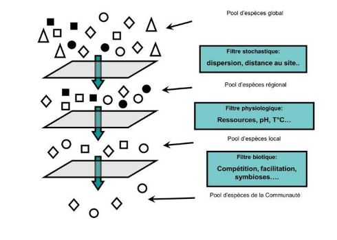

Ecologie des communautés
I) Définitions
Une communauté est un ensemble d'organismes appartenant à des populations d'espèces différentes constituant un réseau de relations.
Individu < Population < Communauté < Ecosystème
La délimitation des communautés sur des caractères biologiques ou physiques. Notion d'appartenance à un même groupe systématique ou appartenant à un même groupe fonctionnel (notion de Guilde) ou appartenant à des mêmes niveaux trophiques (herbivores, carnivores...).
Quelle est la limite d'une communauté ?
Notion d'aire minimale
II) Structure des communautés
Une communauté est caractérisée par sa richesse, la composition d'espèces et son abondance à l'aide des indices de Shannon, Eveness et Simpson.
L'indice de Shannon combine la richesse taxonomique et équitabilité et mesure la difficulté à prédire l'identité du prochain individu.
L'indice de Simpson est basé sur les proportions de chaque taxon.
Les mesures de la diversité sont fait avec les diversités α,β,γ
La diversité α correspond au nombre d'espèces coexistant dans un milieu donné, diversité intra-habitat.
La diversité β correspond au taux de remplacement des espèces le long d'un gradient (par exemple climatique, spatial, d'altitude), au sein d'une région donnée, c'est une diversité inter-habitat, indice de dissimilitude entre deux habitats.
La diversité γ correspond au taux d'addition d'espèces lorsque l'on échantillonne le même milieu à différents endroits. La diversité γ augmente avec l'isolation et la fragmentation de l'habitat.
III) Théories sur l'assemblage des communautés
L'assemblage décrit des patrons stables de coexistance des espèces. Vision déterministe de la structure des communautés (la compétition interspécifique empèche la co-existence des espèces). Les interactions inter-spécifiques vont structurer une communauté mais aussi les facteurs abiotiques.

Théorie neutre (Hubbell, 2001). L'hypothèse fondamentale de la théorie neutraliste est que chaque individu dans chaque espèce possède la même chance de survivre et de se reproduire à chaque pas de temps. Les espèces ont des niches équivalentes.
IV) Interactions interspécifiques
Les interactions biotiques sont la "colonne vertébrale" des communautés. C'est un processus qui permet de comprendre l'évolution, la structuration et le fonctionnement des communautés.
Questionnement général sur les interactions biotiques (nature, intensité, importance, statiques ou dynamiques) sans oublier les interactions directes VS indirectes.
Une espèce clé de voûte maintient l'équilibre d'un écosystème.
Une espèce parapluie facilite l'évolution d'autres espèces.
A) La prédation
Interactions par exploitation, comment des espèces peuvent en manger d'autres.
- prédation
- herbivorie
- parasitisme
Qu'est ce qui dinstingue prédation/herbivorie de parasite/pathogène?
Souvent, la prédation se déroule sous un temps court, contrairement au parasitisme. De plus, les prédateurs possèdent plusieurs proies que le parasite.
Les prédateurs ont souvent des régimes alimentaires variés. Ils sont parfois qualifiés de "spécialistes" si ils montrent une forte préférence pour un type de proie.
Les herbivores ont des régimes alimentaires relativement spécifiques et relativement peu d'espèces différentes consommées.
Les organismes ont mises en places de nombreuses adaptations pour manger et ne pas être mangés.
Il existe 5 adaptations possibles :
- défense physique
- mimmétisme
- camouflage
- effet de groupe
- défense chimique (toxines)
Trade - off : compromis d'une espèce, developper une stratégie
La croissance compensatoire, trade-off qui a finalement un effet positif sur la croissance de la plante.
Introduire des espèces afin d'en réguler d'autres, ou de favoriser leur extinction.
B) La compétition
Il existe la compétition intraspécifique et la compétition interspécifique.
1/ Compétition directe = compétition par interférence
La compétition directe est une compétition entre deux espèces par l'Allélopathie par sécrétion de substance par la plante. Elles peuvent être lessivé ou volatiles sur les feuilles, peut aussi être d'origine racinaire. Ces substances empêchent la germination. Ce sont des métabolites secondaires. Elles peuvent être plus ou moins spécifiques. L'allélopathie peut être intraspécifique afin d'éviter la compétition intraspécifique et obtenir une meilleure qualité de dispersion.
Le noyer va empêcher d'autres espèces compétitive de s'installer en produisant de la juglone.
2/ Compétition indirecte = compétition par exploitation
Pour parler de compétition, il faut parler de deux notions :
- principe d'exclusion compétitive : la compétition va éliminer une espèce, la moins compétitrice
Holmes : pas toujours l'exclusion totale d'une des deux espèces, les espèces peuvent coexister mais vont devoir modifier leur niche.
- distribution spatiale des deux espèces, l'espèce qui se décalera de niche sera la moins compétitrice
L'effet maternel : conditions de croissance de la mère qui ont une influence sur les performances de ses descendants
réponse compétitrice : comment une espèce est impacter par une seconde espèce
l'effet compétiteur : comment l'espèce va impacter une autre espèce
compétition symétrique : compétiteurs équivalents
compétition asymétrique : compétiteurs non équivalents
Si la compétition est très asymétrique, c'est négatif pour l'un et ça n'a pas d'impact pour l'autre, c'est l'amensalisme
Grime : en écologie végétal, il existe un trade-off pour une plante, soit elle est compétitrice, soit stress-tolérante soit ruderale, résiste à la perturbation. On observe cela à l'aide du triangle CSR. Pour Grime, la compétition évolue en fonction du nombre de ressources. La compétition racinaire augmente en même temps que la compétition aérienne. dynamique
Tilman : compétition constante, si la compétition racinaire diminue, la compétition aérienne augmente. statique
C) La facilitation
La facilitation est lorsqu'une espèce nurse à un effet positif sur une autre espèce. Cet effet positif peut - être sur la survie, la croissance ou la reproduction. L'espèce facilité est l'espèce cible.
Souvent on parle d'une balance entre la compétition ou la facilitation. Il ne peut pas avoir de facilitation sans un peu de compétition.
Les fabacées enrichissent le sol et donc ce sont des espèces nurses. Certaines espèces vivant dans des zones arides peuvent avoir des réseaux racinaire assez importante qui peuvent remonter de l'eau et humidifier le sol, Ascenseur racinaire.
D) Mutualisme et commensalisme
Mutualisme : bénéfice réciproque